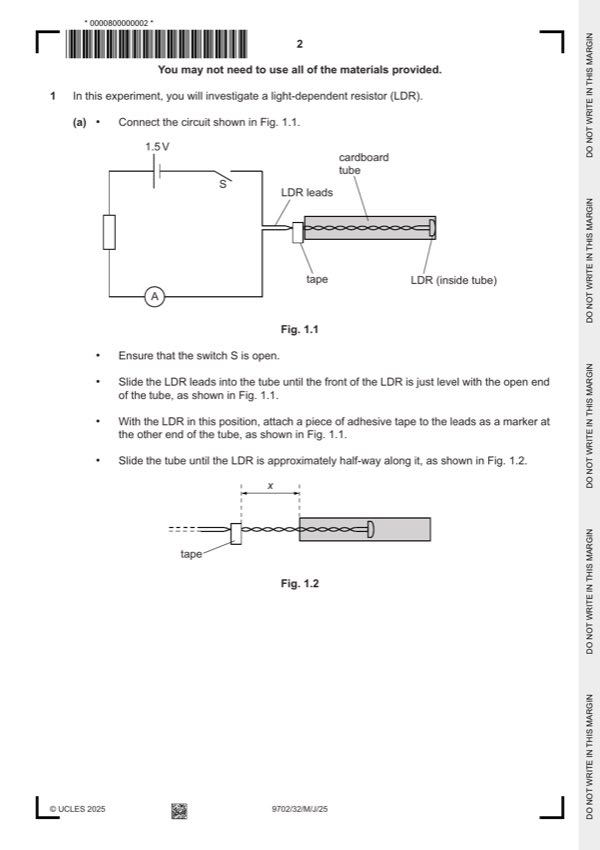

Question 1

Original paper page 2
Part 1(a) — solution
Value for x in range 8.0–14.0 cm with unit. 1
Non-zero value for I less than 2.00 mA with unit. 1
Mark points
- Include the ideas shown in the solution above.
Part 1(b) — solution
Six sets of readings of x (different values) and I with correct trend (as x increases, I decreases) and without help from 5
Supervisor scores 5 marks, five sets scores 4 marks etc.
Range: xmin ⩽ 5.0 cm and xmax ⩾ 16.0 cm. 1
Column headings: 1
Each column heading must contain a quantity and a unit where appropriate.
The presentation of quantity and unit must conform to accepted scientific convention e.g. I (mA½), I / mA½.
Consistency: All values of x must be given to the nearest millimetre. 1
Significant figures: 1
Values of I must be given to the same number of s.f. as (or one more than) the number of s.f. in I.
Calculation: Values of I calculated correctly. 1
Mark points
- Include the ideas shown in the solution above.
Part 1(c)(i) — solution
Axes: 1
Axes must be labelled with the required quantities.
Scales must be chosen so that the plotted points occupy at least half the graph grid in both the x and y directions.
Scale markings are no more than 2 cm (one large square) apart.
Sensible scales must be used, no awkward scales (e.g. 3:10 or fractions).
Plotting of points: 1
All observations in the table must be plotted on the grid.
Diameter of plotted points must be ⩽ half a small square.
Points must be plotted to an accuracy of half a small square in both x and y directions.
Quality: 1
General trend of points must be negative.
All points in the table must be plotted (at least 5) for this mark to be awarded.
It must be possible to draw a straight line that is within 2.0 cm (to scale) on the x-axis of all plotted points.
University Press & Assessment 2025 Page 7 of 11
9702/32 Cambridge International AS & A Level – Mark Scheme May/June 2025
Mark points
- Include the ideas shown in the solution above.
Part 1(c)(ii) — solution
Line of best fit: 1
‘Best fit’ is judged by the balance of all points on the grid (at least 5 points) about the candidate’s line.
There must be an even distribution of points either side of the line along the full length.
Lines must not be kinked or thicker than half a square.
Some candidates may choose to identify an anomalous point. If 6 or more points are plotted and they identify one point as
anomalous (e.g. by circling or labelling) then this point is to be disregarded when judging the line of best fit.
Mark points
- Include the ideas shown in the solution above.
Part 1(c)(iii) — solution
- Correct read-off from a point on the line is substituted into y = mx + c or an equivalent expression
- Intercept read directly from the graph, with read-off at x = 0, accurate to half a small square in y direction
Mark points
- Correct read-off from a point on the line is substituted into y = mx + c or an equivalent expression
- Intercept read directly from the graph, with read-off at x = 0, accurate to half a small square in y direction
Part 1(d) — solution
- a = candidate’s gradient value and b = candidate’s intercept value. 1
Mark points
- a = candidate’s gradient value and b = candidate’s intercept value. 1
Part 1 — solution
mark for each point up to a maximum of 4.
University Press & Assessment 2025 Page 11 of 11
Mark points
- Include the ideas shown in the solution above.